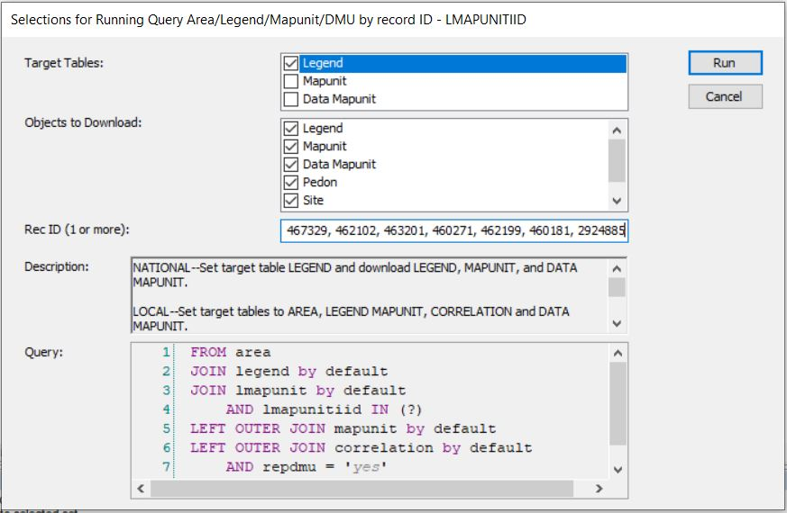
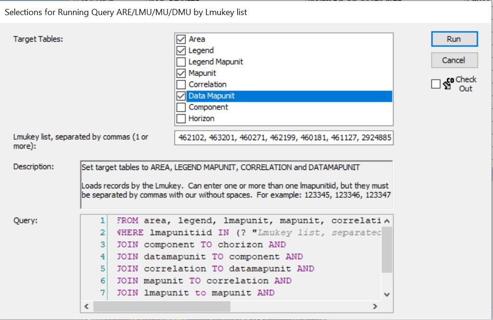

NRCS Ecologist FAQs
2025-03-26
Chapter 1 Introduction
This documents outlines common methodologies used by NRCS Ecologists. It is intended to be an educational resource and to develop best practice standards. This is intended to be a living document. If you have recommendations for best practices or additional practices that should be added, please let me know!
1.1 Overview
This document is divided into 4 sections: mapunits, components, plots, and ecosites. Within those sections are commonly used methodologies relating to the section concept. For example, within the components section are methodologies relating to the use of components (i.e., What are the ecological characteristics of components?).
Much of this methodology relies on a combination of NASIS and R. It is my objective to make the R examples clear enough that someone with minimal to no experience with R can reproduce these examples.
1.2 ODBC Connection
As mentioned, these methodologies frequently utilize R and NASIS. To accomplish this, you will need to have R installed and establish an ODBC connection to NASIS. This is outlined in detail by the NRCS Stats for Soil Survey pre-course assignment.
1.3 Standard dataset/packages
For many of the examples in this document, we will be using the same dataset and packages. I will refer to this as the Standard Dataset. I will provide links back to this section where the Standard Dataset is used.
Load standard packages
library(soilDB)
library(dplyr)
library(aqp)
library(sf)
library(stringr)
library(ggplot2)
library(maps)Step 1. Determine the mapunits of interest using the Mapunit in MLRA tool for MLRA 18 with a 15% Membership. This tool is discussed in detail in What mapunits are in an MLRA?.
Step 2. Take the group of mapunits and enter them into Query > NSSC Pangaea > Area/Legend/Mapunit/DMU by record ID - LMAPUNITIID list.
Run against National Database: 
Run against Local: effec
Step 3. Fetch NASIS data
Note on the duplicates = TRUE argument: fetchNASIS(from = "components") can access two hierarchical levels of data. The higher hierarchical level data is mapunit/soil survey area data. The lower hierarchical level data is component level data. By default, fetchNASIS(from = "components") accesses data at the component level. At times, we want to access data at a higher level (mapunit/soil survey area). When we want to access higher level data, the component level data must be nested within the higher level data. If there is a multiple:1 relationship between the higher level data and the component level data, duplication occurs. The multiple:1 relationship between higher level data and the component level data occurs because of MLRA mapunits - mapunits that occur across soil survey areas. With MLRA mapunits, components can be used in multiple mapunits/soil survey areas.
The take-home message is that you need to use the duplicates = TRUE to access mapunit/soil survey area data. This argument will cause duplication of component level data for MLRA mapunits where the component is used in multiple mapunits/soil survey areas.
This is will provide you with the same data that I am using, if you want to following along exactly. You will likely find it to be of greater utility to use map units relevant to you, though. You can also use different Queries that do not take map units as input. Many Queries will return the same fields as the Query in Step 2 (i.e., the Query, NSSC Pangaea > Area/Legend/Mapunit/DMU by record ID - COIID will also work with most of the methodologies outlined if you prefer to query by Component ID). NASIS Queries do vary from each other, though, so it depends on the intracies of the Query.